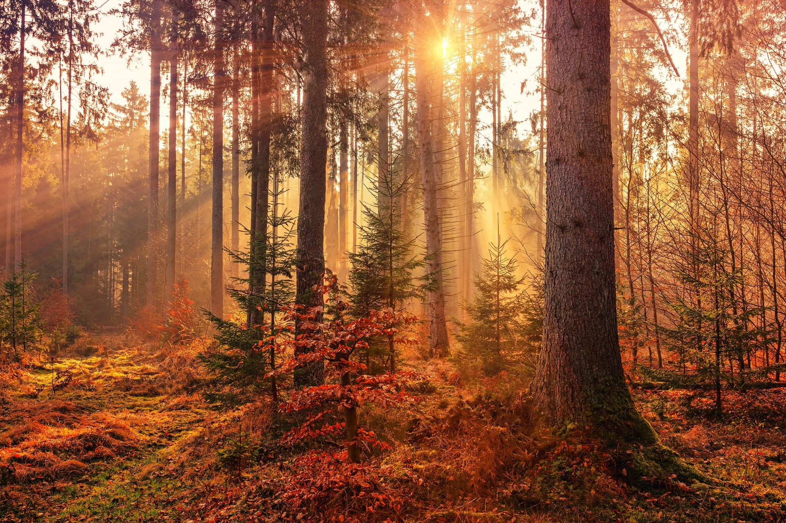

Publié le 28 Mars 2022
Camping et Randonnée
stresser par la grande ville ? un week end de camping ne fera que du bien . Ainsi quelque sugggestion pour la meilleur endroit approprier pour ça . paysage paradisiaqueesser par la grande ville ? un week end de camping ne fera que du bien . Ainsi quelque sugggestion pour la meilleur endroit approprier pour ça . paysage paradisiaque , du vent frais , nature sauvage ...bla bla bla bla bla bla bla bla bla bla bla bla bla bla bla bla bla esser par la grande ville ? un week end de camping n grande ville ? un week end de camping ne fera que du bien . Ainsi quelque sugggestion pour la meilleur endroit approprier pour ça . paysage paradisiaque , du